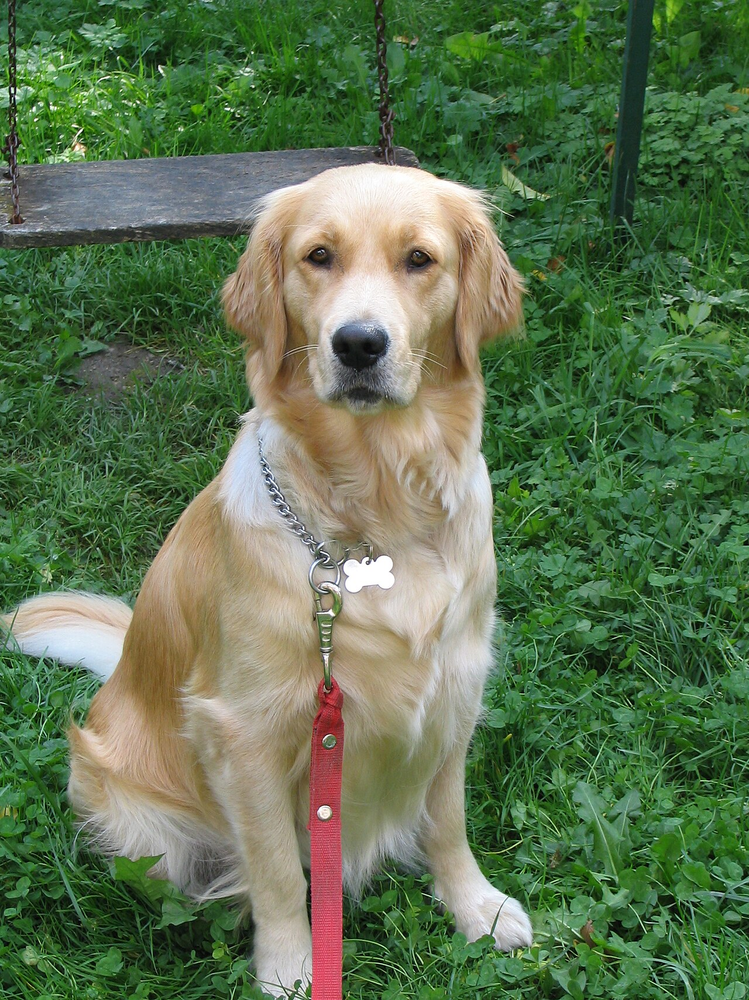
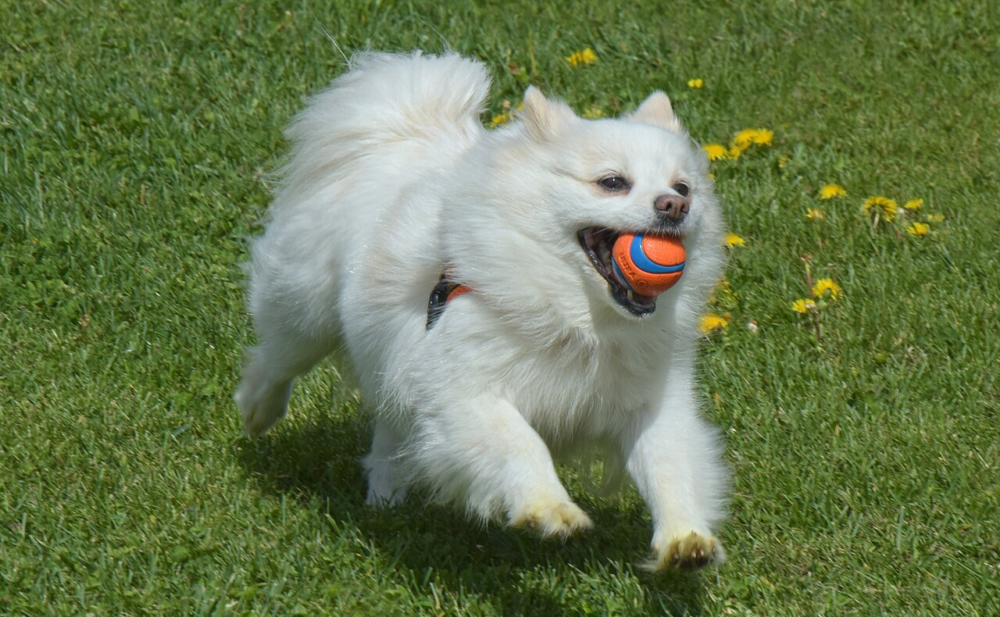
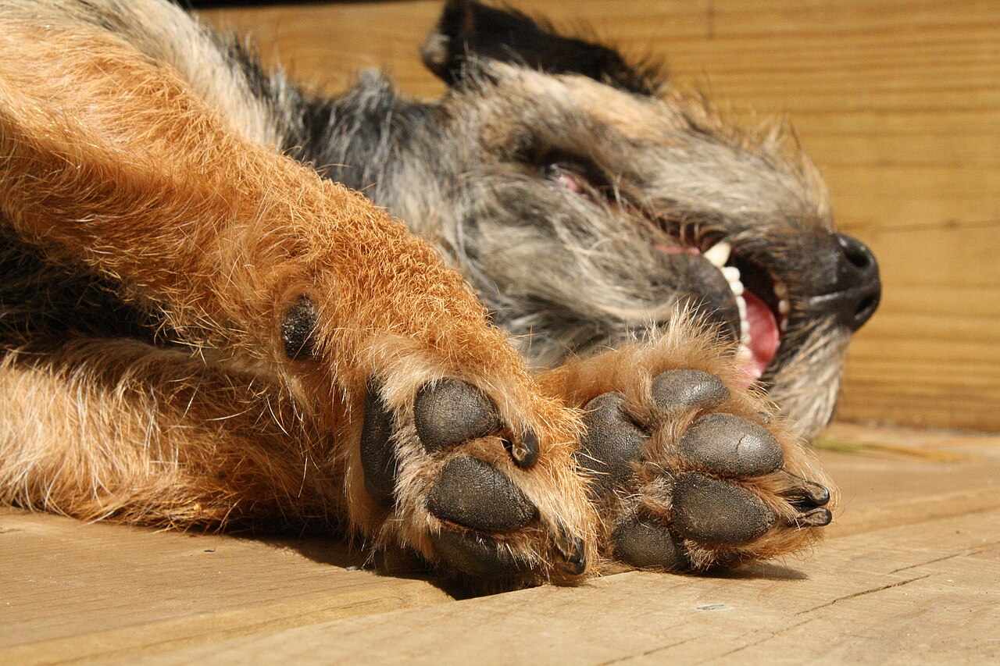
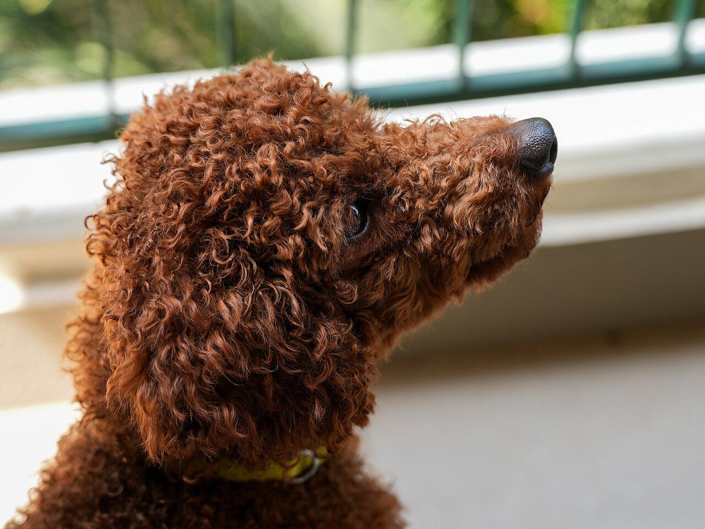
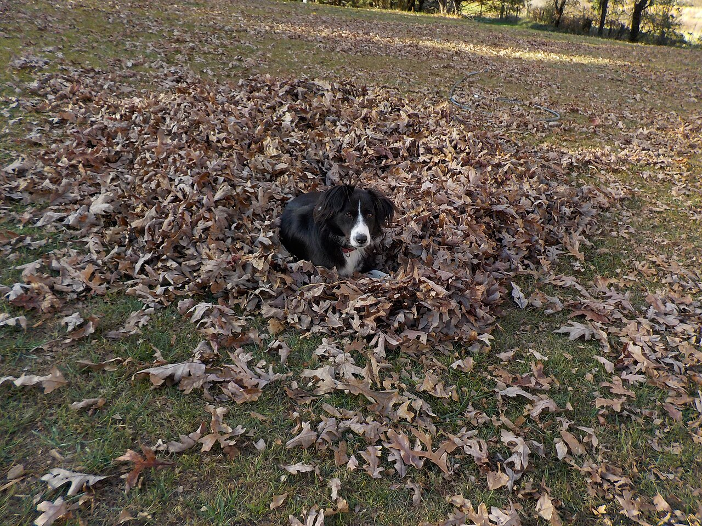

いま掲載できる内容
確認できていない項目は、お問い合わせください。
| 料金 | 準備中(お問い合わせください) |
|---|---|
| 所要時間の目安 | 準備中(お問い合わせください) |
| 対応できるわんちゃん | 準備中(お問い合わせください) |
| 予約の方法 | 準備中(お問い合わせください) |
| 支払い方法 | 準備中(お問い合わせください) |
お問い合わせの前に
電話で聞いておくと伝わりやすい項目の例です(お客様側の目安であり、お店の決まりではありません)。
- ご希望の内容
- ご希望の日にち
- わんちゃんの犬種・年齢・体重の目安
- 初めてのご利用かどうか
ご連絡はこちら
お問い合わせは、お電話が第一、次にInstagramです。